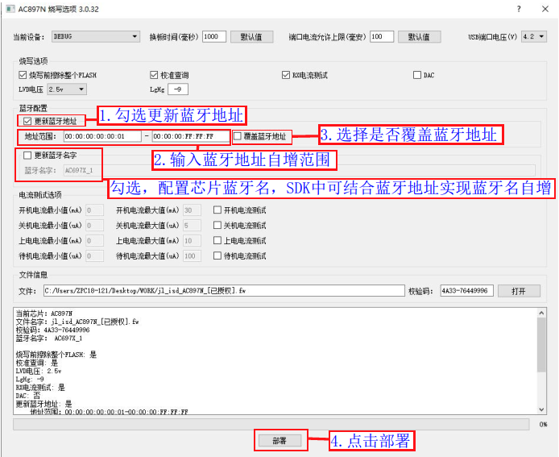
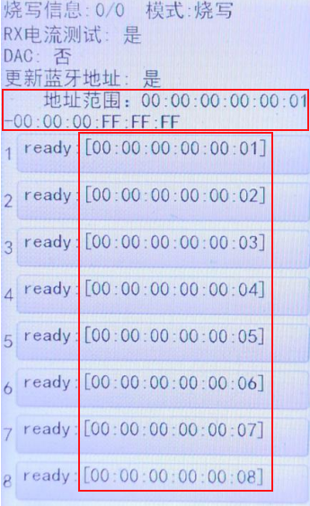
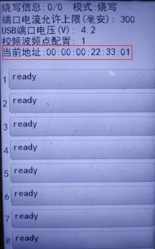

2.12. 蓝牙地址及名字自增功能
Important
烧录器烧录的蓝牙地址，是 EDR 地址（不是 BLE 地址，见 注意事项）
2.12.1. 应用场景
同一批芯片蓝牙产品，实现每颗芯片对应的蓝牙地址都在规定的地址范围内，且每颗芯片的蓝牙地址都是唯一的。要实现这个功能可在更新fw烧录程序时，在PC端的烧录配置项中配置好对应的蓝牙地址范围，烧录目标芯片程序过程中同时将蓝牙地址按照递增的形式烧录到每颗芯片指定位置，既可以实现在SDK开发中对烧录到芯片内蓝牙地址的利用。与此同时，在SDK开发中可将蓝牙地址按照指定的格式添加到蓝牙名上，可实现蓝牙名的唯一性。
2.12.2. 蓝牙地址自增配置
在更新目标芯片程序控制界面，打开并选择要烧录的目标芯片fw文件程序后，如蓝牙地址自增配置所示，
【1】勾选更新蓝牙地址（不勾选，SDK使用的是随机分配的蓝牙地址）；
【2】输入蓝牙地址自增的范围；
【3】选择是否覆盖蓝牙地址（勾选，如芯片已烧有蓝牙地址会覆盖烧录一个新的地址，避免浪费一般不勾选）；
【4】点击部署，更新fw文件和配置信息到烧录器；

蓝牙地址自增配置
Important
每次设置的地址范围，不能超过 u32 的范围。否则可能会报【蓝牙地址初始化失败】
2.12.3. 蓝牙地址烧录到目标芯片
蓝牙地址烧录是按照烧录配置项中配置的地址范围，从最低地址开始递增的形式进行烧录，在烧录芯片程序的同时，烧录器会把蓝牙地址也烧录到目标芯片。
如设定蓝牙地址范围为：00: 00 : 00 :00 : 00 : 01 - 00: 00 : 00 :FF : FF : FF，第1颗芯片烧录成功后的蓝牙地址是00: 00 : 00 :00 : 00 :01，第2颗芯片烧录成功后的蓝牙地址是00: 00 : 00 :00 : 00 :02，依次类推。烧录完所设置的范围内的地址后，烧录器会报“蓝牙地址已用完”，不能再进行程序烧录。蓝牙地址具有唯一性，烧到每个芯片的蓝牙地址都不同。
开启蓝牙地址自增功能，烧录器显示屏正常显示界面进度条显示部分，显示有烧录器分配给当前通道可用的蓝牙地址，如蓝牙地址显示界面所示。当前通道有样机烧录时，会把当前蓝牙地址烧录到目标芯片，烧录成功后烧录器再给当前通道分配一个新地址。

蓝牙地址显示界面
2.12.3.1. 关于选项勾选说明
更新蓝牙地址 |
覆盖蓝牙地址 |
被烧录芯片中蓝牙地址 |
烧录器行为 |
|
|---|---|---|---|---|
未勾选 |
未勾选 |
- |
- |
不更新、不烧录芯片中的蓝牙地址 |
勾选 |
未勾选 |
- |
- |
原有芯片中的地址被擦除，SDK随机生成蓝牙地址 |
- |
勾选 |
未勾选 |
已经有，且在地址范围内 |
保留芯片中已有的地址不变 |
- |
勾选 |
未勾选 |
未有地址，或不在地址范围内 |
芯片蓝牙地址，更新为地址范围内的地址 |
- |
勾选 |
勾选 |
- |
芯片蓝牙地址，更新为地址范围内的地址 |
Note
空片、地址被擦除的芯片、或者未烧录地址的芯片，SDK会默认生成一个随机地址
2.12.3.1.1. 常见问题
如果重烧芯片，芯片中已经有了地址，如何保留原来的地址：
勾选【更新蓝牙地址】，取消勾选【覆盖蓝牙地址】，并将地址范围设置为原来的芯片范围
重新烧录这些有了地址的芯片
注意这时候，不要混入未有地址的芯片，否则将会有样机出现地址重复
2.12.4. 蓝牙名字自增实现说明
实现原理说明
芯片烧录时配置有蓝牙地址自增烧录功能，每颗芯片都烧录有一个指定范围内的蓝牙地址。在SDK开发中，可通过对应的函数接口读取蓝牙地址，可将蓝牙地址按照指定的格式添加到蓝牙名上，可实现蓝牙名根据蓝牙地址进行自增，实现蓝牙名的唯一性（如不懂SDK代码实现请咨询杰理技术支持）。
蓝牙名字自增实现示例
如更新烧录程序时配置的蓝牙地址自增范围为：00: 00 : 00 :00 : 00 :01 - 00: 00 : 00 : FF : FF :FF，第1颗芯片烧录成功后的蓝牙地址是00: 00 : 00 :00 : 00 :01，第2颗芯片烧录成功后的蓝牙地址是00: 00 : 00 :00 : 00 :02，依次类推；
比如SDK设定的蓝牙名字前缀为AC897N_Main,蓝牙名字设定格式为：蓝牙名字前缀 +地址后 8 位；通过SDK代码实现后蓝牙地址为00: 00 : 00 :00 : 00 :01的蓝牙名为：AC897N_Main_00000001,蓝牙地址为00: 00 : 00 :00 :00 :02的蓝牙名为：AC897N_Main_00000002,依次类推。可自定义其他蓝牙名字格式通过SDK代码实现根据蓝牙地址进行蓝牙名字自增。
2.12.5. 查看下一个待烧录蓝牙地址
勾选蓝牙地址自增后，如果要在不插入样机进行烧录的情况下查看下一个待烧录蓝牙地址，可以通过观察烧录器信息滚动屏幕中显示的当前地址，该蓝牙地址是尚未烧录的蓝牙地址，当插入样机烧录时，将取该蓝牙地址烧录。增加显示该蓝牙地址，是为了可以方便知道剩余蓝牙地址范围，当前地址显示如当前蓝牙地址显示界面所示。

当前蓝牙地址显示界面
2.12.6. 注意事项
PC端烧录配置项中所设定的蓝牙地址范围，在未使用完的情况下更新其他的目标芯片程序，所剩余的蓝牙地址将作废。请务必合理使用，避免不必要的的浪费。
烧录器烧录的蓝牙地址，是 EDR 地址。在一些 SDK 中，BLE 地址是依据 EDR 地址计算而得到的（具体计算方式，请咨询提供 SDK 的人），并不是通过烧录器烧录的（通常情况下，BLE 和 EDR 地址不一样）。
2.12.7. 重烧保留芯片已有蓝牙地址
对于有些场景，一些已经烧录有蓝牙地址的芯片，在重烧新的程序时需要保留芯片中已有的蓝牙地址，通常会有下面两种情况。
2.12.7.1. 芯片FLASH中蓝牙地址为一拖二或一拖八指定烧录
如果芯片FLASH中的蓝牙地址是使用一拖二烧写器或者是一拖八烧写器指定范围烧录的，则蓝牙地址位置是固定的。
选择【顺序自增】进行保留，该方式的特点是芯片FLASH中已有蓝牙地址在设置的范围内，则重烧时不擦除并保留，如果未在设定范围内则擦除并写入新的地址。烧录时，可以先抽测一些芯片，看前期烧录蓝牙地址值，假设抽测芯片蓝牙地址是85：A6：33：43：87：E4，其它几个样机前两个字节都是85 A6开头，则此时可以配置蓝牙地址范围为：85：A6：00：00：00：00 ~ 85：A6：FF：FF：FF：FF, 只要重烧时，样机芯片蓝牙地址在设定的地址范围内，则重烧时不会擦除，这里的前提条件就是所有样机的前两个字节必须相同，这样才方便设置一个包含样机蓝牙地址的范围进行重烧并保留芯片中已有蓝牙地址，之所以有该限制，主要是自增计数器只有4字节长度。
选择【保留自增】进行保留，该方式的特点是不管芯片FLASH中已有蓝牙地址在不在设置的自增范围内，重烧都不会擦除FLASH中的地址，如果芯片FLASH中没有地址，则使用设置范围地址烧入到芯片。
2.12.7.2. SDK自动生成的随机地址
应用程序自动生成的蓝牙地址存放位置根据不同型号，可能存放于VM区域或存放于bt_info区域，如果需要在重烧时保留芯片FLASH中已有蓝牙地址，不能使用前面所述顺序自增或者保留自增的方式进行重烧处理，而是需要 将【烧写前擦除整个FLASH】和【擦除VM】选项取消，而且还需要保证重烧的FW程序与芯片已经烧录的程序VM地址相同（如果蓝牙地址存放在bt_info中，则需保证该配置地址也相同），重烧后，地址保留情况以实际测试为准。